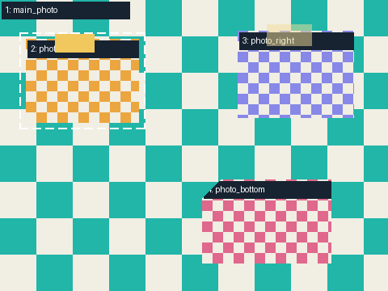

使用程序构造的编号素材，仅检查窗口可见范围；此报告不构成自动发布验收。

| 槽位 | 可见像素 | 结果 | 检查代码 |
|---|---|---|---|
| main_photo | 125262 | failed | PROBE_WINDOW_MISMATCH |
| photo_left | 13727 | passed | PROBE_WINDOW_MATCH |
| photo_right | 15552 | passed | PROBE_WINDOW_MATCH |
| photo_bottom | 16364 | passed | PROBE_WINDOW_MATCH |
旧照片残留、内容语义、客户构图与人物 alpha 尚未检查。
检查证据 JSON